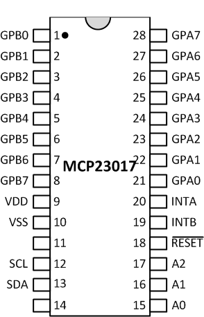
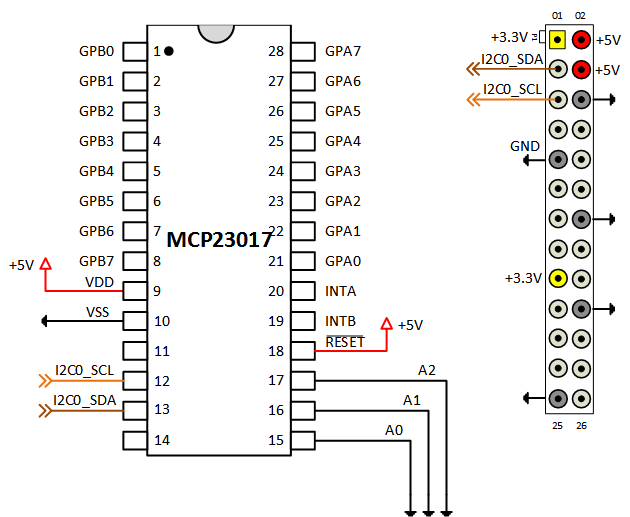
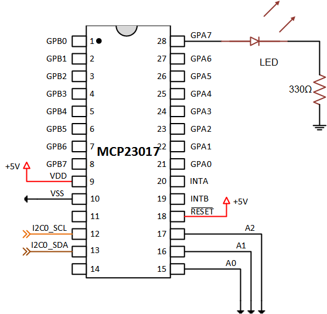

Add Digital I/O Pins to Raspberry Pi Hardware Using MCP23017
This example shows you how to increase the number of digital I/O pins by connecting a MCP23017 I/O expander chip to the Raspberry Pi® hardware.
Contents
Introduction
Raspberry Pi hardware has a limited number of digital I/O pins. You can add 16 digital I/O pins by connecting a MCP23017 I/O expander chip to the Raspberry Pi hardware. Then, using I2C, you can use the additional pins as digital inputs or outputs.
Prerequisites
It is helpful to complete the following examples
Required Hardware
To run this example you need the following hardware:
- Raspberry Pi hardware
- A power supply with at least 1A output
- Breadboard and jumper cables
- A MCP23017 I/O expander
- A red LED
- 330 Ohm resistor.
Overview of MCP23017 I/O Expander
MCP23017 is a 16-port digital I/O expander with an I2C interface.

MCP23017 uses just two pins to communicate with a master controller providing you 16 digital I/O pins in exchange. These digital I/O pins can be configured as either inputs or outputs and operate similarly to the built-in digital I/O ports on the Raspberry Pi hardware.
Connect MCP23017
Connect the MCP23017 I/O expander as shown in the following circuit diagram.

To power the MCP23017, connect the VDD pin to +5V voltage rail, and the VSS pin to the ground rail. Connect the SCL and SDA pins on the MCP23017 to the I2C pins on the Raspberry Pi hardware. Set the I2C device address of the MCP23017 to '0x20' by grounding the A0, A1, A2 pins. Connect the RESET pin to the +5V voltage rail.
Since MCP23017 is powered by +5V, the output pins show +5V when they are set to logic high. The +5V voltage rail on the Raspberry Pi expansion header is not subject to a 50 mA limit as is the case for +3.3V voltage rail, providing more latitude for power consumption. It is safe to connect the SDA and SCL pins directly to the Raspberry Pi hardware because there are resistors on the Raspberry Pi hardware that pull these two signal lines to +3.3V. Make sure that you do not connect any of the MCP23017 output pins directly to the Raspberry Pi hardware.
Test MCP23017
After connecting the MCP23017 to the Raspberry Pi hardware, scan the I2C bus for its device address.
clear rpi rpi = raspi(); for i = 1:length(rpi.AvailableI2CBuses) address = scanI2CBus(rpi, rpi.AvailableI2CBuses{i}) end
The scanI2CBus() method scans the given I2C bus and returns a cell array of device addresses on the bus. If you connected the MCP23017 correctly, the output should include an I2C device address of '0x20'.
Connect an LED
To test the operation of the MCP23017 I/O expander, connect a red LED to GPA7 pin with a 330 Ohm resistor. Connect the long leg of the LED directly to the GPA7 pin of the MCP23017 and the short leg of the LED to one of the terminals of the 330 Ohm resistor. Connect the other terminal of the resistor to the ground rail.

Blink the LED
We created an example MATLAB class for MCP23017 I/O expander. You can control the digital I/O pins of the MCP23017 by creating an object and using the readDigitalPin(), writeDigitalPin() and configurePin() methods. This example class does not implement all available features of the MCP23017.
Create a MCP23017 object by executing the following commands at the MATLAB prompt.
clear mcp mcp = raspi.internal.mcp23017(rpi, <I2C Bus>, '0x20')
The parameter '<I2C Bus>' is the bus MCP23017 is attached to and is either 'i2c-0' or 'i2c-1', depending on the revision of your Raspberry Pi hardware. Blink the LED by executing the following MATLAB commands.
for i = 1:10 writeDigitalPin(mcp, 7, 1); pause(0.5); writeDigitalPin(mcp, 7, 0); pause(0.5); end
The pins of the MCP23017 I/O expander are assigned a numeric value from 0 to 15 with 0 to 7 corresponding to GPA0 through GPA7, and 8 to 15 corresponding to GPB0 through GPB7.
Summary
This example showed how use a MCP23017 I/O expander chip to add digital I/O pins to Raspberry Pi® hardware.